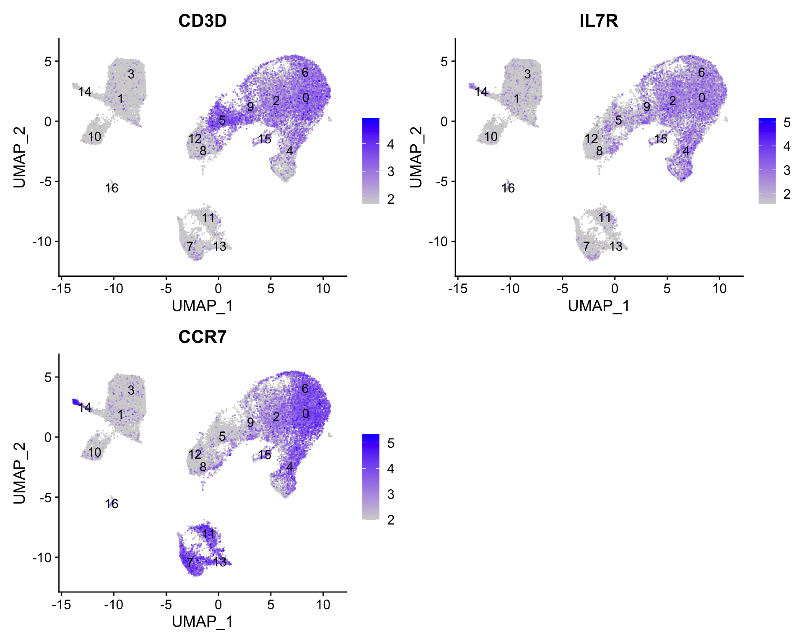

Describe how to determine markers of individual clusters
Discuss the iterative processes of clustering and marker identification
Now that we have identified our desired clusters, we can move on to marker identification, which will allow us to verify the identity of certain clusters and help surmise the identity of any unknown clusters.
Goals:
To determine the gene markers for each of the clusters
To identify cell types of each cluster using markers
To determine whether there’s a need to re-cluster based on cell type markers, perhaps clusters need to be merged or split
Challenges:
Over-interpretation of the results
Combining different types of marker identification
Recommendations:
Think of the results as hypotheses that need verification. Inflated p-values can lead to over-interpretation of results (essentially each cell is used as a replicate). Top markers are most trustworthy.
Identify all markers conserved between conditions for each cluster
Identify markers that are differentially expressed between specific clusters
An object of class Seurat
31130 features across 29629 samples within 3 assays
Active assay: RNA (14065 features, 0 variable features)
2 layers present: counts, data
2 other assays present: SCT, integrated
2 dimensional reductions calculated: pca, umap
原教程将默认的assay设置为了”RNA”，其解释如下：The default assay should have already been RNA, because we set it up in the previous clustering quality control lesson. But we encourage you to run this line of code above to be absolutely sure in case the active slot was changed somewhere upstream in your analysis. Note that the raw and normalized counts are stored in the counts and data slots of RNA assay. By default, the functions for finding markers will use normalized data. （关于FindMarkers为什么要使用”RNA” assay的更多解释，参阅此链接）
Do the clusters corresponding to the same cell types have biologically meaningful differences? Are there subpopulations of these cell types?
Can we acquire higher confidence in these cell type identities by identifying other marker genes for these clusters?
There are a few different types of marker identification that we can explore using Seurat to get to the answer of these questions. Each with their own benefits and drawbacks:
Identification of all markers for each cluster
This analysis compares each cluster against all others and outputs the genes that are differentially expressed/present.
Useful for identifying unknown clusters and improving confidence in hypothesized cell types.
Identification of conserved markers for each cluster
This analysis looks for genes that are differentially expressed/present within each condition first, and then reports those genes that are conserved in the cluster across all conditions. These genes can help to figure out the identity for the cluster.
Useful with more than one condition to identify cell type markers that are conserved across conditions.
Marker identification between specific clusters
This analysis explores differentially expressed genes between specific clusters.
Useful for determining differences in gene expression between clusters that appear to be representing the same celltype (i.e with markers that are similar) from the above analyses.
2FindAllMarkers-Identification of all markers for each cluster
This type of analysis is typically recommended for when evaluating a single sample group/condition. With the FindAllMarkers() function we are comparing each cluster against all other clusters to identify potential marker genes. The cells in each cluster are treated as replicates, and essentially a differential expression analysis is performed with some statistical test.
Tip
The default is a Wilcoxon Rank Sum test, but there are other options available.
The FindAllMarkers() function has three important arguments which provide thresholds for determining whether a gene is a marker:
logfc.threshold: minimum log2 fold change for average expression of gene in cluster relative to the average expression in all other clusters combined. Default is 0.25.
Cons:
could miss those cell markers that are expressed in a small fraction of cells within the cluster of interest, but not in the other clusters, if the average logfc doesn’t meet the threshold
could return a lot of metabolic/ribosomal genes due to slight differences in metabolic output by different cell types, which are not as useful to distinguish cell type identities
min.diff.pct: minimum percent difference between the percent of cells expressing the gene in the cluster and the percent of cells expressing gene in all other clusters combined.
Cons: could miss those cell markers that are expressed in all cells, but are highly up-regulated in this specific cell type
min.pct: only test genes that are detected in a minimum fraction of cells in either of the two populations. Meant to speed up the function by not testing genes that are very infrequently expressed. Default is 0.1.
Cons: if set to a very high value could incur many false negatives due to the fact that not all genes are detected in all cells (even if it is expressed)
You could use any combination of these arguments depending on how stringent/lenient you want to be. Also, by default this function will return to you genes that exhibit both positive and negative expression changes. Typically, we add an argument only.pos to opt for keeping only the positive changes. The code to find markers for each cluster is shown below.
Important
In Seurat v5, we use the presto package (as described here and available for installation here), to dramatically improve the speed of DE analysis, particularly for large datasets (见Seurat-FindMarkers). 因此，需要先安装presto包：
# Find markers for every cluster compared to all remaining cells, report only the positive onesmarkers<-FindAllMarkers(object =seurat_clustered_qc, only.pos =TRUE, logfc.threshold =0.25)head(markers)
The results data frame has the following columns :
p_val : p-value (unadjusted)
avg_log2FC : log fold-change of the average expression between the two groups. Positive values indicate that the feature is more highly expressed in the first group.
pct.1 : The percentage of cells where the feature is detected in the first group
pct.2 : The percentage of cells where the feature is detected in the second group
p_val_adj : Adjusted p-value, based on Bonferroni correction using all features in the dataset.
3FindConservedMarkers-Identification of conserved markers in all conditions
Since we have samples representing different conditions in our dataset, our best option is to find conserved markers. This function internally separates out cells by sample group/condition, and then performs differential gene expression testing for a single specified cluster against all other clusters (or a second cluster, if specified). Gene-level p-values are computed for each condition and then combined across groups using meta-analysis methods from the MetaDE R package.
for FindConservedMarkers, you will recognize some of the arguments we described previously for the FindAllMarkers() function; this is because internally it is using that function to first find markers within each group. Here, we list some additional arguments which provide for when using FindConservedMarkers():
ident.1: this function only evaluates one cluster at a time; here you would specify the cluster of interest.
grouping.var: the variable (column header) in your metadata which specifies the separation of cells into groups
For our analysis we will be fairly lenient and use only the log fold change threshold greater than 0.25. We will also specify to return only the positive markers for each cluster.
Let’s test it out on cluster 0 to see how it works:
The output from the FindConservedMarkers function, is a matrix containing a ranked list of putative markers listed by gene ID for the cluster we specified, and associated statistics. Note that the same set of statistics are computed for each group (in our case, Ctrl and Stim) and the last two columns (max_pval和minimump_p_val) correspond to the combined p-value across the two groups. We describe some of these columns below:
gene: gene symbol
condition_p_val(即本例中的“stim_p_val”和“ctrl_p_val”列，后面同理): p-value not adjusted for multiple test correction for condition
condition_avg_log2FC: average log fold change for condition. Positive values indicate that the gene is more highly expressed in the cluster.
condition_pct.1: percentage of cells where the gene is detected in the cluster for condition
condition_pct.2: percentage of cells where the gene is detected on average in the other clusters for condition
condition_p_val_adj: adjusted p-value for condition, based on bonferroni correction using all genes in the dataset, used to determine significance
max_pval: largest p value of p value calculated by each group/condition
minimump_p_val: combined p value
Tip
The condition_p_val, condition_avg_log2FC, condition_pct.1, condition_pct.2, and condition_p_val_adj mean the same thing as they do in FindMarkers, just restricted to only the cells present in group X. The max_pval is the maximum p-value across all groups. The mimimump_p_val represents one way of doing a meta-analysis of significance values (combining p-values across different tests).
Since each cell is being treated as a replicate this will result in inflated p-values within each group! A gene may have an incredibly low p-value < 1e-50 but that doesn’t translate as a highly reliable marker gene.
When looking at the output, we suggest looking for markers with large differences in expression between pct.1 and pct.2 and larger fold changes. For instance if pct.1 = 0.90 and pct.2 = 0.80, it may not be as exciting of a marker. However, if pct.2 = 0.1 instead, the bigger difference would be more convincing. Also, of interest is if the majority of cells expressing the marker is in my cluster of interest. If pct.1 is low, such as 0.3, it may not be as interesting. Both of these are also possible parameters to include when running the function, as described above.
添加基因注释信息
It can be helpful to add columns with gene annotation information. In order to do that we will load in an annotation file located in your data folder, using the code provided below:
To access the various annotations available from Ensembl for human, we need to first connect to AnnotationHub, then specify the organism and database we are interested in.
# Access the Ensembl database for organismahDb<-query(ah, pattern =c("Homo sapiens", "EnsDb"), ignore.case =TRUE)ahDb
AnnotationHub with 25 records
# snapshotDate(): 2023-10-20
# $dataprovider: Ensembl
# $species: Homo sapiens
# $rdataclass: EnsDb
# additional mcols(): taxonomyid, genome, description,
# coordinate_1_based, maintainer, rdatadateadded, preparerclass, tags,
# rdatapath, sourceurl, sourcetype
# retrieve records with, e.g., 'object[["AH53211"]]'
title
AH53211 | Ensembl 87 EnsDb for Homo Sapiens
AH53715 | Ensembl 88 EnsDb for Homo Sapiens
AH56681 | Ensembl 89 EnsDb for Homo Sapiens
AH57757 | Ensembl 90 EnsDb for Homo Sapiens
AH60773 | Ensembl 91 EnsDb for Homo Sapiens
... ...
AH100643 | Ensembl 106 EnsDb for Homo sapiens
AH104864 | Ensembl 107 EnsDb for Homo sapiens
AH109336 | Ensembl 108 EnsDb for Homo sapiens
AH109606 | Ensembl 109 EnsDb for Homo sapiens
AH113665 | Ensembl 110 EnsDb for Homo sapiens
Next, we acquire the latest annotation files from this Ensembl database.
We can first check which annotation versions are available. Since we want the most recent, we will return the AnnotationHub ID for this database:
# Acquire the latest annotation filesid<-ahDb|>mcols()|>rownames()|>tail(n =1)id
[1] "AH113665"
Finally, we can use the AnnotationHub connection to download the appropriate Ensembl database.
# Download the appropriate Ensembldb database# 需要开启全局代理edb<-ah[[id]]edb
EnsDb for Ensembl:
|Backend: SQLite
|Db type: EnsDb
|Type of Gene ID: Ensembl Gene ID
|Supporting package: ensembldb
|Db created by: ensembldb package from Bioconductor
|script_version: 0.3.10
|Creation time: Mon Aug 7 09:02:07 2023
|ensembl_version: 110
|ensembl_host: 127.0.0.1
|Organism: Homo sapiens
|taxonomy_id: 9606
|genome_build: GRCh38
|DBSCHEMAVERSION: 2.2
|common_name: human
|species: homo_sapiens
| No. of genes: 71440.
| No. of transcripts: 278545.
|Protein data available.
提取并保存注释信息：
And to extract gene-level information we can use the Ensembldb function genes() to return a data frame of annotations.
# Extract gene-level information from databaseannotations<-genes(edb, return.type ="data.frame")colnames(annotations)
First, we will turn the row names with gene identifiers into its own columns. Then we will merge this annotation file with our results from the FindConservedMarkers():
The function FindConservedMarkers()accepts a single cluster at a time, and we could run this function as many times as we have clusters. However, this is not very efficient. Instead we will first create a function to find the conserved markers including all the parameters we want to include. We will also add a few lines of code to modify the output. Our function will:
Create the column of cluster IDs using the cbind() function
# Create function to get conserved markers for any given clusterget_conserved<-function(cluster){FindConservedMarkers(seurat_clustered_qc, ident.1 =cluster, grouping.var ="sample", only.pos =TRUE)%>%rownames_to_column(var ="gene")%>%left_join(y =unique(annotations[, c("gene_name", "description")]), by =c("gene"="gene_name"))%>%cbind(cluster_id =cluster, .)}
Now that we have this function created we can use it as an argument to the appropriate map function. We want the output of the map family of functions to be a dataframe with each cluster output bound together by rows. （map函数输出的为一个list，通过list_rbind函数按照行组合列表中的每一个对象，并输出为数据框）
Now, let’s try this function to find the conserved markers for the clusters that were identified as CD4+ T cells (4, 0, 6, 2) from our use of known marker genes.
FeaturePlot(seurat_clustered_qc, reduction ="umap", features =c("CD3D", "IL7R", "CCR7"), order =TRUE, min.cutoff ='q10', label =TRUE)

Let’s see what genes we identify and of there are overlaps or obvious differences that can help us tease this apart a bit more.
For your data, you may want to run this function on all clusters, in which case you could input 0:20 instead of c(4,0,6,2). Also, it is possible that when you run this function on all clusters, in some cases you will have clusters that do not have enough cells for a particular group - and your function will fail. For these clusters you will need to use FindAllMarkers().
获取top marker基因
We would like to use these gene lists to see of we can identify which celltypes these clusters identify with. Let’s take a look at the top genes for each of the clusters and see if that gives us any hints. We can view the top 10 markers by average fold change across the two groups, for each cluster for a quick perusal:
“In addition, in Seurat v5 we implement a pseudocount (when calculating log-FC) at the group level instead of the cell level. As a result, users will observe higher logFC estimates in v5 - but should note that these estimates may be more unstable - particularly for genes that are very lowly expressed in one of the two groups” ——Changes in Seurat v5
这一小节的后续内容暂时以原教程的marker基因结果为准。
根据top marker基因重新评估细胞群的注释结果
When we look at the entire list, we see clusters 0and 6 have some overlapping genes, like CCR7 and SELL which correspond to markers of memory T cells.
It is possible that these two clusters are more similar to one another and could be merged together as naive T cells. On the other hand, with cluster 2 we observe CREM as one of our top genes; a marker gene of activation. This suggests that perhaps cluster 2 represents activated T cells.
Cell State
Marker
Naive T cells
CCR7, SELL
Activated T cells
CREM, CD69
For cluster 4, we see a lot of heat shock and DNA damage genes appear in the top gene list. Based on these markers, it is likely that these are stressed or dying cells. However, if we explore the quality metrics for these cells in more detail (i.e. mitoRatio and nUMI overlayed on the cluster) we don’t really support for this argument：
There is a breadth of research supporting the association of heat shock proteins with reactive T cells in the induction of anti‐inflammatory cytokines in chronic inflammation. This is a cluster for which we would need a deeper understanding of immune cells to really tease apart the results and make a final conclusion.
To get a better idea of cell type identity for cluster 4 we can explore the expression of different identified markers by cluster using the FeaturePlot() function.
# Plot interesting marker gene expression for cluster 4FeaturePlot(seurat_clustered_qc, features =c("HSPH1", "HSPE1", "DNAJB1"), order =TRUE, min.cutoff ='q10', label =TRUE, repel =TRUE)
# 提取cluster 4，并单独查看interesting marker gene在其中的表达情况subset(seurat_clustered_qc, idents =4)%>%FeaturePlot( features =c("HSPH1", "HSPE1", "DNAJB1"), order =TRUE, min.cutoff ='q10', label =TRUE, repel =TRUE)
We see that only a subset of cluster 4 are highly expressing these genes.
We can also explore the range in expression of specific markers by using violin plots:
# Vln plot - cluster 4VlnPlot(seurat_clustered_qc, features =c("HSPH1", "HSPE1", "DNAJB1"))
Violin plots
Violin plots are similar to box plots, except that they also show the probability density of the data at different values, usually smoothed by a kernel density estimator. A violin plot is more informative than a plain box plot. While a box plot only shows summary statistics such as mean/median and interquartile ranges, the violin plot shows the full distribution of the data. The difference is particularly useful when the data distribution is multimodal (more than one peak). In this case a violin plot shows the presence of different peaks, their position and relative amplitude.
4FindMarkers-Marker identification between specific clusters
Sometimes the list of markers returned don’t sufficiently separate some of the clusters. For instance, we had previously identified clusters 0, 4, 6 and 2 as CD4+ T cells, but when looking at marker gene lists we identfied markers to help us further subset cells. We were lucky and the signal observed from FindAllMarkers() helped us differentiate between naive and activated cells.
Another option to identify biologically meaningful differences would be to use the FindMarkers() function to determine the genes that are differentially expressed between two specific clusters.
We can try all combinations of comparisons, but we’ll start with cluster 2 versus all other CD4+ T cell clusters:
# Determine differentiating markers for CD4+ T cellcd4_tcells<-FindMarkers(seurat_clustered_qc, ident.1 =2, ident.2 =c(0, 4, 6))# Add gene symbols to the DE tablecd4_tcells<-cd4_tcells%>%rownames_to_column(var ="gene")%>%left_join(y =unique(annotations[, c("gene_name", "description")]), by =c("gene"="gene_name"))colnames(cd4_tcells)
Of these top genes the CREM gene stands out as a marker of activation with a positive fold change. We also see markers of naive or memory cells include the SELL and CCR7 genes with negative fold changes, which is in line with previous results.
Based on these plots it seems as though clusters 2 are Activated T cells, cluster 0 and 6 are Naive or memory CD4+ T cells. However, for clusters 4 it is hard to tell.
5 注释细胞cluster
Now taking all of this information, we can surmise the cell types of the different clusters and plot the cells with cell type labels.
Table 1: 细胞注释结果
Cluster ID
Cell Type
0
Naive or memory CD4+ T cells
1
CD14+ monocytes
2
Activated T cells
3
CD14+ monocytes
4
Stressed cells / Unknown
5
CD8+ T cells
6
Naive or memory CD4+ T cells
7
B cells
8
NK cells
9
CD8+ T cells
10
FCGR3A+ monocytes
11
B cells
12
NK cells
13
B cells
14
Conventional dendritic cells
15
Megakaryocytes
16
Plasmacytoid dendritic cells
We can then reassign the identity of the clusters to these cell types:
# Rename all identitiesseurat_clustered_qc<-RenameIdents(seurat_clustered_qc, "0"="Naive or memory CD4+ T cells","1"="CD14+ monocytes","2"="Activated T cells","3"="CD14+ monocytes","4"="Stressed cells / Unknown","5"="CD8+ T cells","6"="Naive or memory CD4+ T cells","7"="B cells","8"="NK cells","9"="CD8+ T cells","10"="FCGR3A+ monocytes","11"="B cells","12"="NK cells","13"="B cells","14"="Conventional dendritic cells","15"="Megakaryocytes","16"="Plasmacytoid dendritic cells")
# Plot the UMAPDimPlot(seurat_clustered_qc, reduction ="umap", label =FALSE)
Tip
If we wanted to remove the potentially stressed cells, we could use the subset() function:
# Remove the stressed or dying cellsseurat_subset_labeled<-subset(seurat_clustered_qc, idents ="Stressed cells / Unknown", # 取子集的标准 invert =TRUE)# 反选# Re-visualize the clustersDimPlot(seurat_subset_labeled, reduction ="umap", label =FALSE)
Now we would want to save our final labelled Seurat object:
# Save final R objectsaveRDS(seurat_clustered_qc, file ="output/scRNA-seq_online/seurat_labelled.rds")
最后，我们把sessionInfo也导出来：
# Create and save a text file with sessionInfosink(file ="output/scRNA-seq_online/sessionInfo_scrnaseq.txt", append =FALSE, split =FALSE)sessionInfo()sink()
---title: "寻找marker基因+细胞注释"---::: callout-note###### Learning Objectives:- Describe how to determine markers of individual clusters- Discuss the iterative processes of clustering and marker identification:::Now that we have identified our desired clusters, we can move on to marker identification, which will allow us to **verify the identity of certain clusters** and help surmise the identity of any unknown clusters.{width="545"}------------------------------------------------------------------------**Goals:**- To **determine the gene markers** for each of the clusters- To **identify cell types** of each cluster using markers- To determine whether there's a need to **re-cluster based on cell type markers**, perhaps clusters need to be merged or split**Challenges:**- Over-interpretation of the results- Combining different types of marker identification**Recommendations:**- Think of the results as hypotheses that need verification. Inflated p-values can lead to over-interpretation of results (essentially each cell is used as a replicate). Top markers are most trustworthy.- Identify all markers conserved between conditions for each cluster- Identify markers that are differentially expressed between specific clusters------------------------------------------------------------------------# 数据导入载入[此前](/single_cell/scRNA-seq_online/08_SC_clustering_quality_control.qmd)完成细胞分群质量评估的数据`seurat_clustered_qc`。```{r}#| cache-lazy: falselibrary(Seurat)seurat_clustered_qc <-readRDS("output/scRNA-seq_online/seurat_clustered_qc.rds")seurat_clustered_qchead(seurat_clustered_qc, 3)```Before we start our marker identification we will explicitly set our default assay, we want to use the **normalized data, but not the integrated data**.```{r}#| cache-lazy: falseDefaultAssay(seurat_clustered_qc) <-"RNA"```::: callout-important[原教程](https://hbctraining.github.io/scRNA-seq_online/lessons/09_merged_SC_marker_identification.html)将默认的assay设置为了"RNA"，其解释如下：The default assay should have already been `RNA`, because we set it up in the [previous clustering quality control lesson](/single_cell/scRNA-seq_online/08_SC_clustering_quality_control.qmd#sec-explore_known_markers). But we encourage you to run this line of code above to be absolutely sure in case the active slot was changed somewhere upstream in your analysis. Note that the raw and normalized counts are stored in the `counts` and `data` slots of `RNA` assay. By default, the functions for finding markers will use normalized data. （关于`FindMarkers`为什么要使用"RNA" assay的更多解释，参阅[此链接](https://github.com/hbctraining/scRNA-seq_online/issues/58)）而在[Seurat V5的官方教程](/single_cell/seurat/marker_gene_identification.qmd#sec-findmarkers_function)中，对于经过`SCTransform`归一化处理后的单细胞数据，在进行`FindMarkers`差异分析之前，需要先运行`seurat_clustered_qc <- PrepSCTFindMarkers(seurat_clustered_qc)`，来预处理SCT assay。详细解释见[此链接](https://www.jianshu.com/p/fb2e43905559)。如果是基于`NormalizeData`标准化的单细胞数据，和这里一样，需要使用"RNA" assay进行差异分析，如果不是，需要通过`DefaultAssay(seurat_clustered_qc) <- "RNA"`进行设定。这里为了和原教程保持一致，默认的将assay设置为"RNA"。:::Our clustering analysis resulted in the following clusters:```{r}DimPlot(seurat_clustered_qc, label =TRUE)```Remember that we had the following questions from the [clustering analysis](/single_cell/scRNA-seq_online/08_SC_clustering_quality_control.qmd#sec-Preliminary_cell_type_identification_results):> 1. Do the clusters corresponding to the same cell types have biologically meaningful differences? Are there subpopulations of these cell types?>> 2. Can we acquire higher confidence in these cell type identities by identifying other marker genes for these clusters?There are a few different types of marker identification that we can explore using Seurat to get to the answer of these questions. Each with their own benefits and drawbacks:1. **Identification of all markers for each cluster** This analysis compares each cluster against all others and outputs the genes that are differentially expressed/present. - *Useful for identifying **unknown clusters** and i**mproving confidence** in hypothesized cell types.*2. **Identification of conserved markers for each cluster** This analysis looks for genes that are differentially expressed/present within each condition first, and then reports those **genes that are conserved in the cluster across all conditions**. These genes can help to figure out the identity for the cluster. - *Useful with **more than one condition** to identify cell type markers that are conserved across conditions.*3. **Marker identification between specific clusters** This analysis explores differentially expressed genes between specific clusters. - *Useful for determining differences in gene expression between clusters that appear to be representing the same celltype (i.e with markers that are similar) from the above analyses.*------------------------------------------------------------------------# `FindAllMarkers`-Identification of all markers for each clusterThis type of analysis is typically recommended for when **evaluating a single sample group/condition**. With the `FindAllMarkers()` function we are comparing each cluster against all other clusters to identify potential marker genes. The cells in each cluster are treated as replicates, and essentially a **differential expression analysis** is performed with some statistical test.::: callout-tipThe default is a **Wilcoxon Rank Sum test**, but there are other options available.:::{width="398"}The `FindAllMarkers()` function has **three important arguments** which provide thresholds for determining whether a gene is a marker:- `logfc.threshold`: minimum log2 fold change for average expression of gene in cluster relative to the average expression in all other clusters combined. Default is **0.25**. - **Cons:** - could miss those cell **markers that are expressed in a small fraction of cells** within the cluster of interest, but not in the other clusters, if the average logfc doesn't meet the threshold - could return a lot of metabolic/ribosomal genes due to slight differences in metabolic output by different cell types, which are not as useful to distinguish cell type identities- `min.diff.pct`: minimum percent difference between the percent of cells expressing the gene in the cluster and the percent of cells expressing gene in all other clusters combined. - **Cons:** could miss those cell markers that are expressed in all cells, but are highly up-regulated in this specific cell type- `min.pct`: only test genes that are detected in a minimum fraction of cells in either of the two populations. Meant to speed up the function by not testing genes that are very infrequently expressed. Default is 0.1. - **Cons:** if set to a very high value could incur many false negatives due to the fact that not all genes are detected in all cells (even if it is expressed)You could use any combination of these arguments depending on how stringent/lenient you want to be. Also, by default this function will return to you genes that exhibit both positive and negative expression changes. Typically, we add an argument `only.pos` to opt for keeping only the positive changes. The code to find markers for each cluster is shown below.::: callout-importantIn Seurat v5, we use the **`presto`** package (as described [here](https://www.biorxiv.org/content/10.1101/653253v1) and available for installation [here](https://github.com/immunogenomics/presto)), to dramatically improve the speed of DE analysis, particularly for large datasets (见[Seurat-FindMarkers](/single_cell/seurat/marker_gene_identification.qmd#sec-findmarkers_function)). 因此，需要先安装`presto`包：```{r}#| eval: false#| echo: fenced# install.packages("devtools")devtools::install_github("immunogenomics/presto")```:::```{r}# Find markers for every cluster compared to all remaining cells, report only the positive onesmarkers <-FindAllMarkers(object = seurat_clustered_qc, only.pos =TRUE,logfc.threshold =0.25) head(markers)tail(markers)```The results data frame has the following columns :- `p_val` : p-value (unadjusted)- `avg_log2FC` : log fold-change of the average expression between the two groups. Positive values indicate that the feature is more highly expressed in the first group.- `pct.1` : The percentage of cells where the feature is detected in the first group- `pct.2` : The percentage of cells where the feature is detected in the second group- `p_val_adj` : Adjusted p-value, based on **Bonferroni correction** using all features in the dataset.获取每个cluster的前10个marker基因 ( 详细解释见下面的 @sec-top_conserved_markers ):```{r}library(dplyr)# 获取每个cluster的前10个marker基因top_markers <- markers |>group_by(cluster) |>slice_max(n =10, order_by = avg_log2FC)```# `FindConservedMarkers`-Identification of conserved markers in all conditionsSince we have samples representing different conditions in our dataset, **our best option is to find conserved markers**. This function internally **separates out cells by sample group/condition**, and then performs differential gene expression testing for a single specified cluster against all other clusters (or a second cluster, if specified). Gene-level p-values are computed for each condition and then combined across groups using meta-analysis methods from the MetaDE R package.{width="360"}## 寻找cluster 0和cluster 10的conserved markers我们首先通过寻找cluster 0和cluster 10的conserved markers来初步学习`FindConservedMarkers`函数的用法。for `FindConservedMarkers`, you will recognize some of the arguments we described previously for the `FindAllMarkers()` function; this is because internally it is using that function to first find markers within each group. Here, we list some additional arguments which provide for when using `FindConservedMarkers()`:- `ident.1`: this function only evaluates one cluster at a time; here you would specify the cluster of interest.- `grouping.var`: the variable (column header) in your metadata which specifies the separation of cells into groups`FindConservedMarkers`函数会调用`metap`包，`metap`包需要`multtest`包，所以需要先安装这两个依赖包：```{r}#| eval: falseBiocManager::install('multtest')install.packages('metap')```### 寻找cluster 0的conserved markersFor our analysis we will be fairly lenient and **use only the log fold change threshold greater than 0.25**. We will also specify to return only the positive markers for each cluster.Let's **test it out on cluster 0** to see how it works:```{r}cluster0_conserved_markers <-FindConservedMarkers(seurat_clustered_qc,ident.1 =0,grouping.var ="sample",only.pos =TRUE,logfc.threshold =0.25)head(cluster0_conserved_markers)```The output from the `FindConservedMarkers` function, is a matrix containing a ranked list of putative markers listed by gene ID for the cluster we specified, and associated statistics. Note that the same set of statistics are computed for each group (in our case, Ctrl and Stim) and the last two columns (`max_pval`和`minimump_p_val`) correspond to the combined p-value across the two groups. We describe some of these columns below:- `gene`: gene symbol- `condition_p_val`(即本例中的“stim_p_val”和“ctrl_p_val”列，后面同理): p-value not adjusted for multiple test correction for condition- `condition_avg_log2FC`: average log fold change for condition. Positive values indicate that the gene is more highly expressed in the cluster.- `condition_pct.1`: percentage of cells where the gene is detected in the cluster for condition- `condition_pct.2`: percentage of cells where the gene is detected on average in the other clusters for condition- `condition_p_val_adj`: adjusted p-value for condition, based on **bonferroni correction** using all genes in the dataset, used to determine significance- `max_pval`: largest p value of p value calculated by each group/condition- `minimump_p_val`: combined p value::: callout-tipThe `condition_p_val`, `condition_avg_log2FC`, `condition_pct.1`, `condition_pct.2`, and `condition_p_val_adj` mean the same thing as they do in `FindMarkers`, just restricted to only the cells present in group X. The `max_pval` is the maximum p-value across all groups. The `mimimump_p_val` represents one way of doing a meta-analysis of significance values (combining p-values across different tests).(来自：<https://github.com/satijalab/seurat/issues/1164>):::::: callout-warningSince each cell is being treated as a replicate this will result in inflated p-values within each group! A gene may have an incredibly low p-value \< 1e-50 but that doesn't translate as a highly reliable marker gene.:::When looking at the output, [**we suggest looking for markers with large differences in expression between `pct.1` and `pct.2` and larger fold changes**]{.underline}. For instance if `pct.1` = 0.90 and `pct.2` = 0.80, it may not be as exciting of a marker. However, if `pct.2` = 0.1 instead, the bigger difference would be more convincing. Also, of interest is if the majority of cells expressing the marker is in my cluster of interest. If `pct.1` is low, such as 0.3, it may not be as interesting. Both of these are also possible parameters to include when running the function, as described above.### 添加基因注释信息It can be helpful to add columns with gene annotation information. In order to do that we will load in an annotation file located in your `data` folder, using the code provided below:```{r}annotations <-readRDS("data/scRNA-seq_online/annotations.rds")head(annotations, 3)```该数据的"description"列即对基因的注释，下面我们把这一列通过匹配基因名将其添加到cluster0_conserved_markers数据框中。::: {.callout-tip collapse="true"}###### 获取基因注释信息的方法首先从`BiocManager`安装[`AnnotationHub`包](https://bioconductor.org/packages/release/bioc/html/AnnotationHub.html)和[`ensembldb`包](https://bioconductor.org/packages/release/bioc/html/ensembldb.html)：```{r}#| eval: falseBiocManager::install("AnnotationHub")BiocManager::install("ensembldb")```**从AnnotationHub下载并提取所需的注释信息数据库:**To access the various annotations available from Ensembl for human, we need to first connect to `AnnotationHub`, then specify the organism and database we are interested in.```{r}#| eval: false# 从AnnotationHub下载注释信息数据库library(AnnotationHub)ah <-AnnotationHub()ah`````` AnnotationHub with 70762 records# snapshotDate(): 2023-10-20# $dataprovider: Ensembl, BroadInstitute, UCSC, ftp://ftp.ncbi.nlm.nih.gov/g...# $species: Homo sapiens, Mus musculus, Drosophila melanogaster, Bos taurus,...# $rdataclass: GRanges, TwoBitFile, BigWigFile, EnsDb, Rle, OrgDb, SQLiteFil...# additional mcols(): taxonomyid, genome, description,# coordinate_1_based, maintainer, rdatadateadded, preparerclass, tags,# rdatapath, sourceurl, sourcetype # retrieve records with, e.g., 'object[["AH5012"]]' title AH5012 | Chromosome Band AH5013 | STS Markers AH5014 | FISH Clones AH5015 | Recomb Rate AH5016 | ENCODE Pilot ... ... AH116159 | org.Aegialitis_vocifera.eg.sqlite AH116160 | org.Charadrius_vociferous.eg.sqlite AH116161 | org.Charadrius_vociferus.eg.sqlite AH116162 | org.Oxyechus_vociferus.eg.sqlite AH116163 | org.Drosophila_erecta.eg.sqlite ``````{r}#| eval: falsehead(unique(ah$species))`````` [1] "Homo sapiens" "Vicugna pacos" "Dasypus novemcinctus"[4] "Otolemur garnettii" "Papio hamadryas" "Papio anubis" ``````{r}#| eval: false# Access the Ensembl database for organismahDb <-query(ah, pattern =c("Homo sapiens", "EnsDb"), ignore.case =TRUE)ahDb`````` AnnotationHub with 25 records# snapshotDate(): 2023-10-20# $dataprovider: Ensembl# $species: Homo sapiens# $rdataclass: EnsDb# additional mcols(): taxonomyid, genome, description,# coordinate_1_based, maintainer, rdatadateadded, preparerclass, tags,# rdatapath, sourceurl, sourcetype # retrieve records with, e.g., 'object[["AH53211"]]' title AH53211 | Ensembl 87 EnsDb for Homo Sapiens AH53715 | Ensembl 88 EnsDb for Homo Sapiens AH56681 | Ensembl 89 EnsDb for Homo Sapiens AH57757 | Ensembl 90 EnsDb for Homo Sapiens AH60773 | Ensembl 91 EnsDb for Homo Sapiens ... ... AH100643 | Ensembl 106 EnsDb for Homo sapiens AH104864 | Ensembl 107 EnsDb for Homo sapiens AH109336 | Ensembl 108 EnsDb for Homo sapiens AH109606 | Ensembl 109 EnsDb for Homo sapiens AH113665 | Ensembl 110 EnsDb for Homo sapiens```Next, we acquire the latest annotation files from this Ensembl database.We can first check which annotation versions are available. Since we want the most recent, we will return the AnnotationHub ID for this database:```{r}#| eval: false# Acquire the latest annotation filesid <- ahDb |>mcols() |>rownames() |>tail(n =1)id`````` [1] "AH113665"```Finally, we can use the AnnotationHub connection to download the appropriate Ensembl database.```{r}#| eval: false# Download the appropriate Ensembldb database# 需要开启全局代理edb <- ah[[id]]edb`````` EnsDb for Ensembl:|Backend: SQLite|Db type: EnsDb|Type of Gene ID: Ensembl Gene ID|Supporting package: ensembldb|Db created by: ensembldb package from Bioconductor|script_version: 0.3.10|Creation time: Mon Aug 7 09:02:07 2023|ensembl_version: 110|ensembl_host: 127.0.0.1|Organism: Homo sapiens|taxonomy_id: 9606|genome_build: GRCh38|DBSCHEMAVERSION: 2.2|common_name: human|species: homo_sapiens| No. of genes: 71440.| No. of transcripts: 278545.|Protein data available.```**提取并保存注释信息：**And to extract gene-level information we can use the Ensembldb function `genes()` to return a data frame of annotations.```{r}#| eval: false# Extract gene-level information from databaseannotations <-genes(edb, return.type ="data.frame")colnames(annotations)`````` [1] "gene_id" "gene_name" "gene_biotype" [4] "gene_seq_start" "gene_seq_end" "seq_name" [7] "seq_strand" "seq_coord_system" "description" [10] "gene_id_version" "canonical_transcript" "symbol" [13] "entrezid" ```We aren't interested in all of the information present in this `annotations` file, so we are going to extract that which is useful to us.```{r}#| eval: false# Select annotations of interestlibrary(dplyr)annotations <- annotations |>select(gene_id, gene_name, seq_name, gene_biotype, description)```**保存到本地:**```{r}#| eval: falsesaveRDS(annotations, file ="data/scRNA-seq_online/annotations.rds")```:::First, we will turn the row names with gene identifiers into its own columns. Then we will merge this annotation file with our results from the `FindConservedMarkers()`:1. 首先通过`tibble`包的`rownames_to_column`函数将“cluster0_conserved_markers”数据框的行名（基因symbol）转换成新的一列“gene”2. 然后，通过`dplyr`包的`left_join`函数合并“cluster0_conserved_markers”数据（`x`）和“annotations”数据框的 "description"列（`y`）。通过匹配“cluster0_conserved_markers”数据中的“gene”列（上一步生成）和“annotations”数据的“gene_name”列来进行合并。同时，`left_join`会保留`x`（这里即上一步添加了“gene列”的“cluster0_conserved_markers”数据框）中的所有值；而删除y（“annotations”数据框）中用于匹配的那一列（即“gene_name”）```{r}# Combine markers with gene descriptions library(tibble) # 调用rownames_to_column函数library(dplyr) # 调用left_join函数cluster0_ann_markers <- cluster0_conserved_markers |>rownames_to_column(var ="gene") |># left_join保留x中的所有观测left_join(y =unique(annotations[, c("gene_name", "description")]),by =c("gene"="gene_name"))head(cluster0_ann_markers, 3)```### 寻找cluster 10的conserved markersIn the [previous lesson](/single_cell/scRNA-seq_online/08_SC_clustering_quality_control.qmd#sec-fcgr3a_monocyte_markers), we identified **cluster 10** as FCGR3A+ monocytes by inspecting the expression of known cell markers FCGR3A and MS4A7.```{r}#| fig-width: 10FeaturePlot(seurat_clustered_qc, reduction ="umap", features =c("FCGR3A", "MS4A7"), order =TRUE,min.cutoff ='q10', label =TRUE)```Now, we use `FindConservedMarkers()` function to find conserved markers for cluster 10.```{r}cluster10_conserved_markers <-FindConservedMarkers(seurat_clustered_qc,ident.1 =10,grouping.var ="sample",only.pos =TRUE,logfc.threshold =0.25)cluster10_ann_markers <- cluster10_conserved_markers |>rownames_to_column(var="gene") |>left_join(y =unique(annotations[, c("gene_name", "description")]),by =c("gene"="gene_name"))head(cluster10_ann_markers)```> 可以发现cluster10的FCGR3A和MS4A7的表达比例显著高于其他cluster。符合此前的判断。------------------------------------------------------------------------## 批量寻找多个clusters的conserved markers {#sec-function_to_find_markers}The function `FindConservedMarkers()` **accepts a single cluster at a time**, and we could run this function as many times as we have clusters. However, this is not very efficient. Instead we will first create a function to find the conserved markers including all the parameters we want to include. We will also **add a few lines of code to modify the output**. Our function will:1. Run the `FindConservedMarkers()` function2. Transfer row names to a column using `rownames_to_column()` function3. Merge in annotations4. Create the column of cluster IDs using the `cbind()` function```{r}# Create function to get conserved markers for any given clusterget_conserved <-function(cluster) {FindConservedMarkers(seurat_clustered_qc,ident.1 = cluster,grouping.var ="sample",only.pos =TRUE) %>%rownames_to_column(var ="gene") %>%left_join(y =unique(annotations[, c("gene_name", "description")]),by =c("gene"="gene_name")) %>%cbind(cluster_id = cluster, .) }```Now that we have this function created we can use it as an argument to the appropriate `map` function. We want the output of the `map` family of functions to be a **dataframe with each cluster output bound together by rows**. （`map`函数输出的为一个list，通过`list_rbind`函数按照行组合列表中的每一个对象，并输出为数据框）Now, let's try this function to find the conserved markers for the clusters that were identified as **CD4+ T cells (4, 0, 6, 2)** from our use of [known marker genes](/single_cell/scRNA-seq_online/08_SC_clustering_quality_control.qmd#sec-cd4_t_cells).```{r}#| fig-width: 10#| fig-height: 8FeaturePlot(seurat_clustered_qc, reduction ="umap", features =c("CD3D", "IL7R", "CCR7"), order =TRUE,min.cutoff ='q10', label =TRUE)```Let's see what genes we identify and of there are overlaps or obvious differences that can help us tease this apart a bit more.```{r}library(purrr)conserved_markers <-map(c(4, 0, 6, 2), get_conserved) |>list_rbind()```::: callout-tip###### Finding markers for all clustersFor your data, you may want to run this function on all clusters, in which case you could input `0:20` instead of `c(4,0,6,2)`. Also, it is possible that when you run this function on all clusters, in **some cases you will have clusters that do not have enough cells for a particular group** - and your function will fail. For these clusters you will need to use `FindAllMarkers()`.:::### 获取top marker基因 {#sec-top_conserved_markers}We would like to use these gene lists to see of we can **identify which celltypes these clusters identify with.** Let's take a look at the top genes for each of the clusters and see if that gives us any hints. We can view the top 10 markers by **average fold change** across the two groups, for each cluster for a quick perusal:1. 首先通过`dplyr`包的`mutate`函数计算新的变量“avg_fc”，计算依据为：avg_fc = (ctrl_avg_log2FC + stim_avg_log2FC) /22. 然后通过`dplyr`包的`group_by`函数以“cluster_id”列为依据进行分组计算3. 最后，通过`dplyr`包的`slice_max`函数取“avg_fc”（`order_by = avg_fc`）最大的前10行数据（`n = 10`）。由于`group_by`定义了分组计算，所以会输出每个cluster的前10个marker基因```{r}# 获取每个cluster的前10个marker基因top_conserved_markers <- conserved_markers %>%mutate(avg_fc = (ctrl_avg_log2FC + stim_avg_log2FC) /2) %>%group_by(cluster_id) %>%slice_max(n =10, order_by = avg_fc)```::: callout-warning###### 待解决的问题这里基于Seurat V5的运行结果和[原教程](https://hbctraining.github.io/scRNA-seq_online/lessons/09_merged_SC_marker_identification.html)的top markers结果不一致。原教程的top_conserved_markers如下：可能的原因：> “In addition, in Seurat v5 we implement a **pseudocount** (when calculating log-FC) at the **group level** instead of the cell level. As a result, users will observe **higher logFC estimates** in v5 - but should note that these estimates may be more unstable - particularly for genes that are very lowly expressed in one of the two groups” ——[Changes in Seurat v5](/single_cell/seurat/seurat_intro.qmd#sec-changes_in_seurat_v5)这一小节的后续内容暂时以原教程的marker基因结果为准。:::### 根据top marker基因重新评估细胞群的注释结果When we look at the entire list, we see **clusters 0** **and 6** have some overlapping genes, like **CCR7** and **SELL** which correspond to **markers of memory T cells**.It is possible that these two clusters are more similar to one another and could be merged together as **naive T cells**. On the other hand, with **cluster 2** we observe **CREM** as one of our top genes; a marker gene of activation. This suggests that perhaps cluster 2 represents activated T cells.| Cell State | Marker ||:-----------------:|:----------:|| Naive T cells | CCR7, SELL || Activated T cells | CREM, CD69 |For **cluster 4**, we see a lot of heat shock and DNA damage genes appear in the top gene list. Based on these markers, it is likely that these are **stressed or dying cells**. However, if we explore the quality metrics for these cells in more detail (i.e. mitoRatio and nUMI overlayed on the cluster) we don't really support for this argument：```{r}# Visualize the distribution of mitochondrial gene expression detected per cell# cluster 4中每个细胞检测到的线粒体基因表达分布情况library(ggplot2)seurat_clustered_qc %>%subset(idents =4) %>% .@meta.data %>%ggplot(aes(color = sample, x = mitoRatio, fill = sample)) +geom_density(alpha =0.2) +scale_x_log10() +theme_classic() +geom_vline(xintercept =0.2)```> There is a breadth of research supporting the association of heat shock proteins with reactive T cells in the induction of anti‐inflammatory cytokines in chronic inflammation. This is a cluster for which we would need a deeper understanding of immune cells to really tease apart the results and make a final conclusion.To get a better idea of cell type identity for cluster 4 we can explore the expression of different identified markers by cluster using the `FeaturePlot()` function.```{r}#| fig-width: 10#| fig-height: 8# Plot interesting marker gene expression for cluster 4FeaturePlot(seurat_clustered_qc, features =c("HSPH1", "HSPE1", "DNAJB1"),order =TRUE,min.cutoff ='q10', label =TRUE,repel =TRUE)# 提取cluster 4，并单独查看interesting marker gene在其中的表达情况subset(seurat_clustered_qc, idents =4) %>%FeaturePlot(features =c("HSPH1", "HSPE1", "DNAJB1"),order =TRUE,min.cutoff ='q10', label =TRUE,repel =TRUE)```> We see that **only a subset of cluster 4 are highly expressing these genes**.We can also explore the range in expression of specific markers by using **violin plots**:```{r}#| fig-width: 10# Vln plot - cluster 4VlnPlot(seurat_clustered_qc, features =c("HSPH1", "HSPE1", "DNAJB1"))```::: {.callout-tip collapse="true"}###### Violin plotsViolin plots are similar to box plots, except that they also show the **probability density** of the data at different values, usually smoothed by a **kernel density estimator**. A violin plot is more informative than a plain box plot. While a box plot only shows summary statistics such as mean/median and interquartile ranges, the **violin plot shows the full distribution of the data**. The difference is particularly useful when the data distribution is multimodal (more than one peak). In this case a violin plot shows the presence of different peaks, their position and relative amplitude.:::# `FindMarkers`-**Marker identification between specific clusters**Sometimes the list of markers returned don't sufficiently separate some of the clusters. For instance, we had previously identified clusters 0, 4, 6 and 2 as CD4+ T cells, but when looking at marker gene lists we identfied markers to help us further subset cells. We were lucky and the signal observed from `FindAllMarkers()` helped us differentiate between naive and activated cells.Another option to identify biologically meaningful differences would be to use the **`FindMarkers()` function to determine the genes that are differentially expressed between two specific clusters**.{width="379"}We can try all combinations of comparisons, but we'll start with **cluster 2** versus all other CD4+ T cell clusters:```{r}# Determine differentiating markers for CD4+ T cellcd4_tcells <-FindMarkers(seurat_clustered_qc,ident.1 =2,ident.2 =c(0, 4, 6)) # Add gene symbols to the DE tablecd4_tcells <- cd4_tcells %>%rownames_to_column(var ="gene") %>%left_join(y =unique(annotations[, c("gene_name", "description")]),by =c("gene"="gene_name"))colnames(cd4_tcells)# Reorder columns and sort by "p_val_adj"cd4_tcells <- cd4_tcells[, c(1, 3:5, 2, 6:7)]cd4_tcells <-arrange(cd4_tcells, p_val_adj)cd4_tcells$gene[1:10]```::: callout-warning这个表格和[原教程](https://hbctraining.github.io/scRNA-seq_online/lessons/09_merged_SC_marker_identification.html)的仍然有差异。:::> Of these top genes the **CREM gene** stands out as a marker of activation with a positive fold change. We also see markers of naive or memory cells include the **SELL** and **CCR7** genes with negative fold changes, which is in line with previous results.>> | Cell State | Marker |> |:-----------------:|:----------:|> | Naive T cells | CCR7, SELL |> | Activated T cells | CREM, CD69 |进一步通过气泡图来可视化上述基因的表达.```{r}DotPlot(seurat_clustered_qc, features =c("CCR7", "SELL", "CREM", "CD69"), idents =c(0, 2, 4, 6)) +RotatedAxis()```> 可以看到，和`FindMarkers`找到的top genes的fold change一致，cluster 2中的CREM基因相较于cluster 0, 4, 6高表达，而cluster 2中的CCR7和SELL相对低表达。>> Based on these plots it seems as though **clusters 2** are **Activated T cells, cluster 0 and 6 are** Naive or memory CD4+ T cells. However, for **clusters 4** it is hard to tell.------------------------------------------------------------------------# 注释细胞clusterNow taking all of this information, we can surmise the cell types of the different clusters and plot the cells with cell type labels.| Cluster ID | Cell Type ||:----------:|:----------------------------:|| 0 | Naive or memory CD4+ T cells || 1 | CD14+ monocytes || 2 | Activated T cells || 3 | CD14+ monocytes || 4 | Stressed cells / Unknown || 5 | CD8+ T cells || 6 | Naive or memory CD4+ T cells || 7 | B cells || 8 | NK cells || 9 | CD8+ T cells || 10 | FCGR3A+ monocytes || 11 | B cells || 12 | NK cells || 13 | B cells || 14 | Conventional dendritic cells || 15 | Megakaryocytes || 16 | Plasmacytoid dendritic cells |: 细胞注释结果 {#tbl-细胞注释结果}We can then reassign the identity of the clusters to these cell types:```{r}#| cache-lazy: false# Rename all identitiesseurat_clustered_qc <-RenameIdents(seurat_clustered_qc, "0"="Naive or memory CD4+ T cells","1"="CD14+ monocytes","2"="Activated T cells","3"="CD14+ monocytes","4"="Stressed cells / Unknown","5"="CD8+ T cells","6"="Naive or memory CD4+ T cells","7"="B cells","8"="NK cells","9"="CD8+ T cells","10"="FCGR3A+ monocytes","11"="B cells","12"="NK cells","13"="B cells","14"="Conventional dendritic cells","15"="Megakaryocytes","16"="Plasmacytoid dendritic cells")``````{r}#| fig-width: 10# Plot the UMAPDimPlot(seurat_clustered_qc, reduction ="umap", label =FALSE)```::: callout-tipIf we wanted to remove the potentially stressed cells, we could use the `subset()` function:```{r}#| cache-lazy: false# Remove the stressed or dying cellsseurat_subset_labeled <-subset(seurat_clustered_qc,idents ="Stressed cells / Unknown", # 取子集的标准invert =TRUE) # 反选# Re-visualize the clustersDimPlot(seurat_subset_labeled, reduction ="umap", label =FALSE)```:::Now we would want to save our final labelled Seurat object:```{r}# Save final R objectsaveRDS(seurat_clustered_qc, file ="output/scRNA-seq_online/seurat_labelled.rds")```最后，我们把sessionInfo也导出来：```{r}#| output: false# Create and save a text file with sessionInfosink(file ="output/scRNA-seq_online/sessionInfo_scrnaseq.txt", append =FALSE, split =FALSE)sessionInfo()sink()```::: {.callout-tip collapse="true"}###### 关于`sink`函数`sink`函数能够将R脚本运行的结果输出到文本文件中，输出的内容为两个`sink()`命令之间的所有内容。- `file`：输出目录- `append`：取`TRUE`表示若输出目录下有与结果文件同名的文件，则计算结果将追加到原文件内容的后面；取`FALSE`（默认）表示将本次的计算结果覆盖原文件的内容- `split`：取`TRUE`表示在计算结果输出到指定文件中的同时，还输出到控制台上；取`FALSE`（默认）表示计算结果仅输出到指定文件中。:::------------------------------------------------------------------------# 可选的后续分析:[](https://mp.weixin.qq.com/s?__biz=Mzg2MTExNTkwNA==&mid=2247532151&idx=1&sn=55ff4362b5a572d53072c1fe85c593d6&chksm=ce1e3d18f969b40e71503729f38a8e01cd80e313446da1571d7d42c61e094d94b3519cdb85be&mpshare=1&scene=1&srcid=0910pFfJBQOE8XVDU2opxc6B&sharer_shareinfo=98ce7b038453fa671b5e609905ff82f0&sharer_shareinfo_first=98ce7b038453fa671b5e609905ff82f0#rd)[](https://mp.weixin.qq.com/s?__biz=Mzg2MTExNTkwNA==&mid=2247532151&idx=1&sn=55ff4362b5a572d53072c1fe85c593d6&chksm=ce1e3d18f969b40e71503729f38a8e01cd80e313446da1571d7d42c61e094d94b3519cdb85be&mpshare=1&scene=1&srcid=0910pFfJBQOE8XVDU2opxc6B&sharer_shareinfo=98ce7b038453fa671b5e609905ff82f0&sharer_shareinfo_first=98ce7b038453fa671b5e609905ff82f0#rd)## 提取感兴趣细胞亚群进一步细分（Explore a subset of the cell types to discover subclusters of cells）鉴定完细胞类型后，接下来就是对鉴定的目标细胞群进行深入的研究。一般是提取目标亚群，然后在进一步细分。细胞再分群的意义在于进一步分析细胞的组成成分。见[多个单细胞数据集整合分析（下）](/single_cell/sc_supplementary/integrated_analysis_multiple_single_cell_datasets_2.qmd)。## **单细胞差异分析（**Perform **differential expression analysis** **between conditions）**在实际研究中，往往需要研究两类细胞之间的差异，或者是某类细胞在不同处理样本间的差异基因情况，因此需要将待比较的细胞群单独拿出来进行分析。后面，我们在[此前的章节](/single_cell/seurat/de_vignette.qmd)中对如何**寻找不同样本类型/条件间同一细胞类型内的差异基因**进行了探索。除了分析细胞内基因表达的差异，也可以采用最常见的GO和KEGG富集分析，还可以进行GSEA、GSVA、SCENIC等分析，从功能、通路、基因调控网络等方面进行探究。## 免疫类群分析很多疾病的发生、发展都和免疫细胞有关，一般病灶组织内或者附近的免疫细胞较正常的组织会更丰富。为了将疾病中免疫反应描绘出来，可以采用以下分析策略：①对免疫细胞再分群，得到更多功能更加精细化的免疫细胞亚群；②免疫细胞类群在不同分组中的分布变化；③免疫细胞类群拟时序分析，探究不同疾病程度、不同发育阶段或者不同生理状态下的免疫反应机制。## 关键细胞的分化轨迹最开始拿到的单细胞转录组测序数据，并未直接告诉我们每个细胞处在什么状态。因此，需要借助一些分析方法来实现轨迹上的排序，比如Monocle2拟时序分析/轨迹推断，ScVelo RNA速度分析等，推断潜在的细胞分化方向性，挖掘一些稀少的中间状态细胞，解析细胞分化过程中起调控作用的关键基因；也可以比较实验组/对照组中分化的差异。## 探索细胞-细胞互作每个细胞都能分泌细胞因子或者激素，这些细胞因子能够被周围细胞上的受体接收并用于调节相应的生理活动，细胞与细胞之间有相互联系，致病细胞可能是由于大类中某一种亚类细胞分化或者演化过来的；那么这些演化过程可能是由于其他细胞的细胞因子导致的。在锁定目标细胞类群之后，通过CellphoneDB细胞通讯分析、受体-配体分析等，找到与目标细胞相互作用的其他细胞类型，找到“直接”和“间接”的细胞调控网络。当然，对于已经筛选出目标基因了，也可以通过PPI分析找到基因/蛋白间的互作关系。## 挖掘关键调控转录因子细胞异质性以及这种异质性是如何发展和维持的，在很大程度上是由潜在的基因调控网络决定的，特定转录因子（transcription factor，TF）集合的协同表达驱动各自靶标基因的表达，从而建立特定的基因表达谱；SCENIC是用来研究和破译基因调控的工具，能从单细胞转录组数据中推断TF、基因调控网络和细胞类型。其基本原理是基于共表达和DNA调控保守序列（motif）分析推断基因调控网络，然后在每个细胞中分析网络活性以鉴定细胞状态。## 湿实验验证，探索潜在机制（Experimentally validate intriguing markers for our identified cell types）除了以上单细胞测序数据相关分析以外，湿实验验证已逐渐成为单细胞分析的有力补充。比如用RT-qPCR/FISH等在RNA层面进行验证，用WB/免疫荧光/免疫组化/流式分析等在蛋白层面进行验证，还可以利用组织芯片或者TCGA数据库信息，进行临床水平的验证；也可以用细胞谱系示踪技术标记细胞 , 对关键细胞类群及其后代所有细胞的增殖、分化和迁移等活动进行追踪观察等；甚至可以利用流式分选出感兴趣的细胞群，然后对目的细胞群进行基因操作（上调/下调/敲除等），进行更深入的机制研究。总之，根据具体的实验目的，进行更完善的实验设计。------------------------------------------------------------------------::: {.callout-note collapse="true" icon="false"}## Session Info```{r}#| echo: falsesessionInfo()```:::